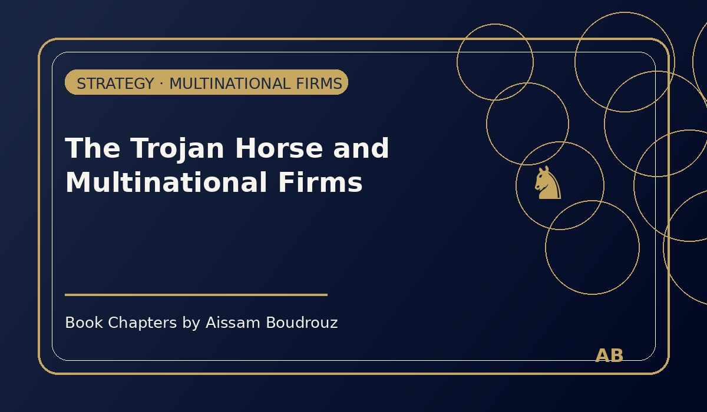

The Trojan Horse and Multinational Firms
Long before globalization, there was strategy. And long before trade agreements or economic unions, there was the story of Troy.
Most of us know it — from history books, from movies, or maybe from a late-night rewatch of Troy with Brad Pitt as Achilles. For ten years, the Greek army failed to enter the city of Troy, protected by a massive wall no weapon could break.
Then came a different kind of weapon — an idea.
The Greeks built a magnificent wooden horse, covered in gold and presented as a gift to mark the end of the war. The Trojans, thinking the conflict was finally over, brought the horse inside their city walls.
They celebrated. They relaxed. They slept.
And that night, as everyone slept, the Greek soldiers hidden inside the horse climbed out, opened the gates from within, and Troy — undefeated for a decade — fell in a single night.
A myth reborn in modern economics
Thousands of years later, the story repeats itself — not in war, but in business.
Economists and strategists call it "The Trojan Horse Strategy."
It happens when a company realizes it cannot enter a market directly — maybe because the market is protected by trade barriers, or by regional agreements that favor domestic firms.
So instead of attacking from the outside, the company finds another way in: it buys a local company from the inside.
How the horse rolls in today's world
Imagine a large protected market — say, the European Union, where only European firms can operate freely without trade restrictions.
A foreign company — for instance, from Japan or South Korea — wants to sell its products there but faces import limits and tariffs. So instead of fighting from outside, it quietly acquires a struggling European firm — one that's on the verge of bankruptcy.
The process is called absorption.
The foreign investor buys the local company, keeps its European identity, and starts operating inside the "wall" — but now, under new ownership.
And just like that, the gate opens. The market that once seemed closed becomes part of their empire.
The Japanese example
In the 1990s, several Japanese automakers used this exact approach. Facing tough European regulations and local competition, companies like Toyota and Mitsubishi began investing in or acquiring European car manufacturers that were struggling.
It wasn't about charity or nostalgia — it was about strategy.
By entering through the "horse," they gained access to one of the most competitive and lucrative markets in the world, without firing a single economic "arrow."
Lessons from the myth
When you think about it, the Greek soldiers and the global corporations of today share one thing in common: they both understood that sometimes, the smartest way to win isn't through strength — it's through intelligence.
The Trojan Horse Strategy is a reminder that in modern economics, wars are rarely fought with weapons. They're fought with ideas, mergers, and acquisitions.
And just like in the myth, the walls that seem unbreakable can fall — not with force, but with strategy hidden in plain sight.
← Back to Articles